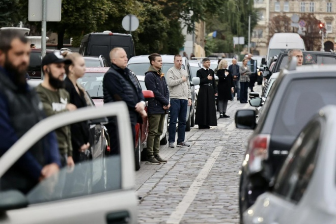
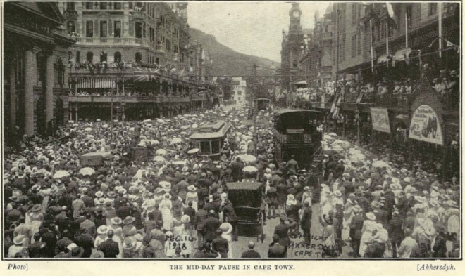
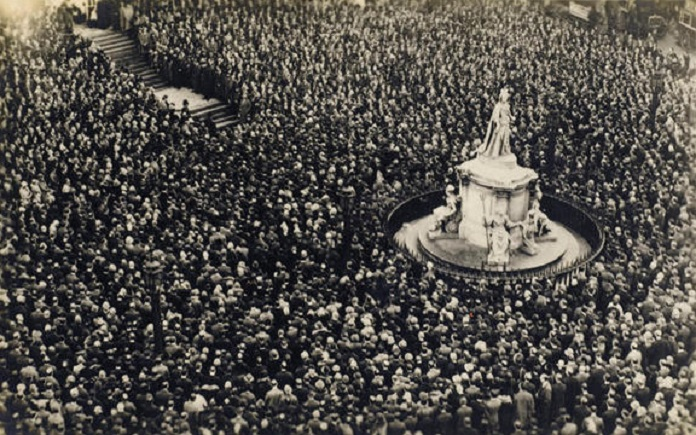
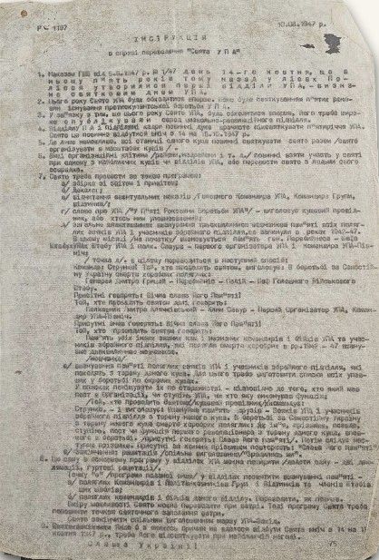
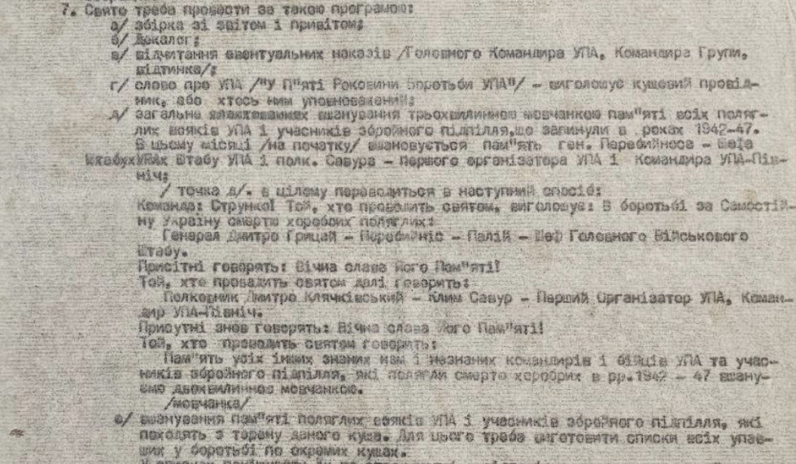
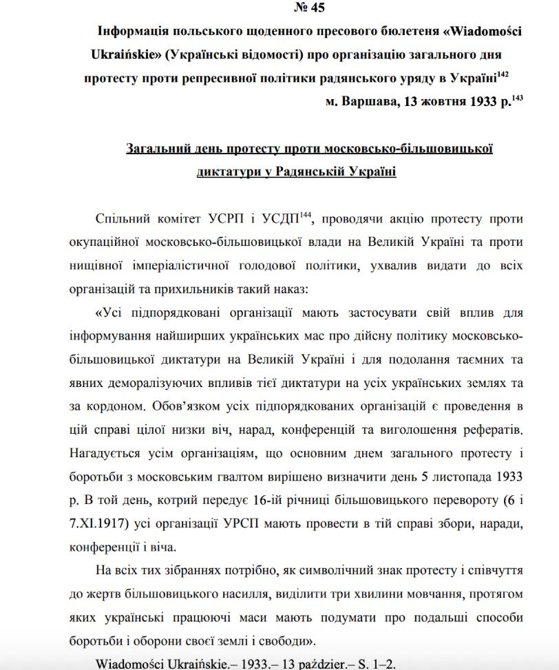
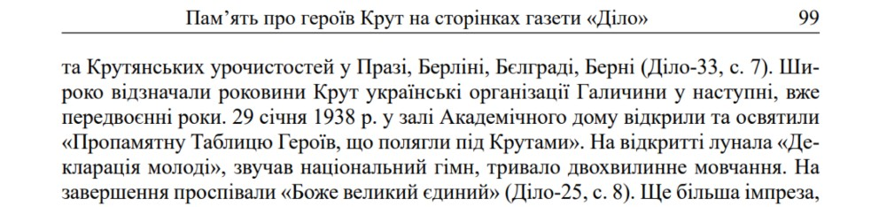
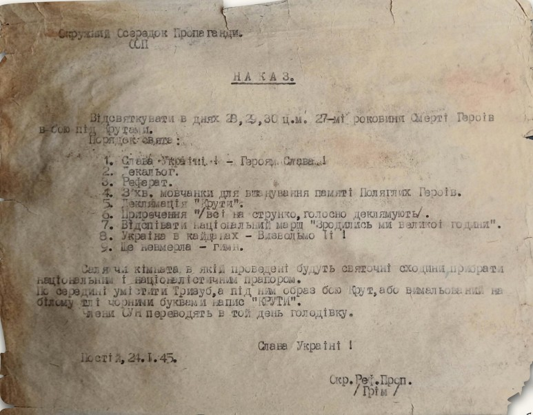
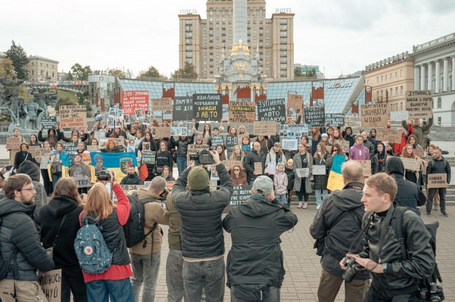

Перебираючи в домашньому архіві документи близько року тому, натрапила на «Святочий указ УПА» 1947 року. Це п'ятиріччя святкування Дня Української повстанської армії. В документі, який описував, як проводити цей день у своєму загоні, був один пункт: «проведення трихвилинки мовчанки памʼяті за поляглими вояками».
«Вау», подумала я. Невже це підтвердження того, що ми успадкували цю традицію не від совка, а мали історію проведення цього ритуалу в українських повстанців на Запоріжжі, Львівщині, Черкащині та в інших регіонах?
Ритуали вигадують люди, але органічно вплітатися в наше життя вони можуть тільки з доброї волі суспільства. Щоразу, коли я читаю чи бачу, як люди агресивно реагують, коли хтось не дотримується Хвилини мовчання, то думаю: це ж так не працює.
Мабуть, це буде один із найповніших текстів про Хвилину мовчання, її значення і її історію для українців. Наступні написані речі для того, щоб мати ґрунт під ногами і розуміти більше, що ми робимо.
Історія щоденного ритуалу
м. Кейптаун 1916 → 1919
Місто, що спинялося щодня
Уявіть південь Африки. Велике портове місто, через яке проводиться чи не половина логістики Першої світової війни. Щодня рівно опівдні тут стріляє гармата, а містяни за нею звіряють годинники.
1916 рік. До міста доходять перші списки загиблих південноафриканців. У церкві пропонують на три хвилини затихнути під час служби, щоб вшанувати памʼять загиблих.
1917 рік. Просту дію пропонують проводити по всьому місту – після пострілу гармати.
Травень 1918 року. Місто спинилось уперше. Завмерли трамваї. Затих ринок. Чоловіки поскидали капелюхи. Спершу тиша тривала три хвилини – потім вирішили, що задовго, і лишили дві. І робили це щодня. До січня 1919 року.

«Не можна було не замислитися, який особистий інтерес вона мала до цього акту пам'яті», – так журналіст описував жінку в чорному, що спинилась на двохвилинку тиші у м. Кейптаун. Він не знав, кого вона згадувала. І ми не знаємо.
м. Лондон травень 1919
Альтернативна версія
Існує ще одна версія того, як пауза стала однією з головних комеморативних практик Британії. Згідно з нею, у травні 1919 р. (через рік після започаткування такого ритуалу в м. Кейптаун) австралійський журналіст і ветеран Едвард Джордж Хані застав завершення війни у Лондоні. Місцеві жителі святкували перемогу в Першій світовій війні галасом, піснями і танцями. Це його обурило – здавалося, що всі забули про тих, хто своє життя вже віддав.
Едвард друкує листа у London Evening News, де пропонує: «Лише п'ять маленьких хвилин. П'ять хвилин мовчання для вшанування памʼяті. …на вулиці, вдома, в театрі, будь-де, де випадково опиняються англійці та англійки…».
Джерела не вказують чому, але ми знаємо, що Британський король таки вирішив зупинитися на двох хвилинах.
м. Лондон 11 листопада 1919
Тиша на всю країну
Чи просто з міста Кейптаун, чи завдяки австралійському журналістові тиша почала ширитися світом. Невідомо, як саме новина дійшла до короля. Але 11 листопада 1919 року об 11 годині ранку, в першу річницю Компʼєнського перемир'я, завмерла вже вся Британія — на національне двохвилинне мовчання.
Лондонські газети наступного дня писали:
«Перший удар одинадцятої [години] справив магічний ефект. Трамваї завмерли, навіть вантажні коні спинилися, ніби з власної волі. Тиша поглибилася й поширилася на все місто — стала настільки виразною, що вражала відчуттям чутності. Це була тиша, яка була майже болем. І над усім цим витав дух пам'яті».

Ізраїль Японія Туреччина США Україна
Хвилина мовчання у світі
Більшість країн проводять хвилину (або хвилини) мовчання раз чи двічі на рік. Тиша шириться світом – і кожна країна відкриває її по-своєму.
В Ізраїлі Хвилина мовчання звучить двічі: увечері напередодні Дня памʼяті полеглих о 20:00 звучить сирена тривалістю одну хвилину. Наступного дня об 11:00 – ще одна сирена, вже на дві хвилини, у цей момент зупиняється рух і люди завмирають в знак вшанування.
Японія спиняється в точну мить катастрофи: 6 серпня о 8:15, коли над Хіросімою вибухнула атомна бомба, і 9 серпня об 11:02, коли вибух стався над Нагасакі.
У Туреччині щороку 10 листопада о 9:05 Хвилиною мовчання вшановують засновника держави Ататюрка – це час його смерті.
У США в День памʼяті, в останній понеділок травня, о 15:00 відбувається загальнонаціональна мить памʼяті. Її проводять у тиші або під Taps – військовий сигнал, який давно став там одним зі звуків памʼяті.
В Україні хвилина мовчання зазвичай супроводжується звуком метронома. Це, до речі, єдине, що ми справді успадкували від Радянського Союзу. Але не саму тишу — тишу ми мали задовго до нього.
2014 → 2022
Сучасна Україна
Україна проводить хвилину мовчання давно: зокрема о 16:00 в День пам'яті жертв голодоморів, коли запалюємо свічку.
У війську хвилина мовчання існує від початку російсько-української війни в 2014 р. Її почали проводити під час шикування о 9:00.
У 2018 р. при Міністерстві оборони України відкрили Меморіальний комплекс «Зала памʼяті», де о 09:00 щодня зачитували імена загиблих у цей день людей.
Після удару по драмтеатру в м. Маріуполь, 16 березня 2022 року президент України підписав Указ, яким започатковувалось проведення загальнонаціональної хвилини мовчання щодня за загиблими військовими та вбитими цивільними.
Та чи була хвилина мовчання до сучасної України?
1933 → 1947
Повстанська армія
Під час війни – у лісах, криївках – Українська повстанська армія завмирає на «Загальне вшанування трихвилинною мовчанкою пам'яті всіх поляглих вояків УПА та учасників збройного підпілля, які загинули у рр. 1942–1947». Це цитата зі Святочного наказу, в якому є Інструкція відзначення п'ятиріччя Свята УПА, 14 жовтня 1947 року.

Повстанці вже тоді зачитували імена загиблих. І розуміли наскільки важлива персоналізація. Вони проводили дво– або трихвилинні мовчанки на всі пам'ятні дати чи свята в підпіллі аж до трансформації Повстанської армії на підпільний рух у середині 1950-х рр.

Але виявилося, що документ від 1947 року – не найдавніший.
Голодомор 1933 року. По Україні тривають селянські повстання. На Волині (на той момент в складі Польщі) ширяться протести проти репресивної політики СРСР, читаємо в наказі про організацію загального дня протесту: «виділити три хвилини мовчання, протягом яких українські працюючі маси мають подумати про подальші способи боротьби і оборони своєї землі і свободи».

1938 рік. У залі Академічного дому в м. Львів відкривають пам'ятну таблицю. «Лунала „Деклярація молоді“, звучав державний гімн і тривало двохвилинне мовчання», – писала газета «Діло».

1945 рік, День Героїв Крут. У наказі знову читаємо: «три хвилини мовчанки» за полеглими.

Герой України
Ірина Цибух, «Чека»
Бойова медикиня, журналістка, Герой України. Загинула у 2024 року.
За життя вона говорила про хвилину мовчання як про ритуал вдячності, з якого можна починати свій день. Просила персоналізувати його – згадувати конкретні імена. Казала: «Так, ця хвилина зачіпає навіть тих, хто не причетний до війни. Але саме так до неї можна стати причетним».
«Пам'ять – не для загиблих, бо вони вже загинули. Вона – для майбутніх поколінь. І ми, як свідки, маємо нести її далі»
Ми несемо.
Що це для нас сьогоднішніх?
Сьогодні щоденним проведенням ми зробили хвилину мовчання справді універсальним способом пам'яті. Для когось це хвилина честі. Для когось – гордості. Хвилина пам'яті чи хвилина єдності. Для когось – хвилина, коли згадують імена. Хтось думає про живих і про те, кому написати сьогодні. Хтось питає себе: а що я роблю для своєї країни?

Думаю, що після закінчення війни, ми трансформуємо нашу Хвилину мовчання із щоденного ритуалу – у ритуал раз на рік.
Історія перевіряється пам'яттю. І ми, українці, проходимо цю перевірку.
Джерела
Місто, що спинялося щодня
Альтернативна версія · Тиша на всю країну
Хвилина мовчання у світі
Повстанська армія
- Дисертація Лілії Гриник, яка описує повсякдення життя упівців, має принаймні три згадки про вшанування тишею. Десь у тексті згадано про хвилину мовчання, а десь – про дві хвилини мовчання. scholar.google.com
- Ярослав Марченко у своїй праці «Памʼять про Героїв Крут» на сторінках газети «Діло» розповідає про 1938 р., коли відкривали пам’ятну табличку на їх честь. В цьому джерелі також згадуються саме дві хвилини мовчання. ukr-inst.lviv.ua